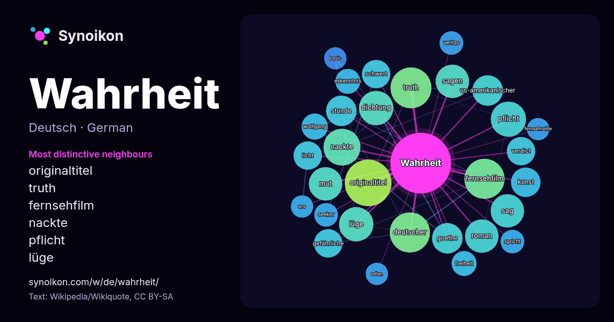

Deutsch · beliebtes Wort
Wahrheit
“truth” · Die Wörter in seinem Umfeld aus 1056 Vorkommen in Wikipedia, Wikiquote.

Typischste Nachbarn
- originaltitel 33×
- truth 28×
- fernsehfilm 26×
- nackte 23×
- pflicht 20×
- lüge 20×
- dichtung 19×
- sag 19×
- mut 18×
- sagen 18×
- goethe 15×
- stunde 15×
- verdict 14×
- gefährliche 14×
- schwert 13×
- roman 13×
- licht 12×
- us-amerikanischer 12×
- deutscher 11×
- erkenntnis 11×
× = wie viel häufiger als in allgemeinem Wikipedia-Text.
Häufigste Nachbarn
- originaltitel 35
- truth 27
- deutscher 26
- fernsehfilm 26
- nackte 22
- film 20
- pflicht 20
- dichtung 19
- lüge 19
- mut 18
- roman 18
- sag 18
- sagen 18
- goethe 15
- leben 15
- stunde 15
- us-amerikanischer 15
- kunst 14
- gefährliche 13
- licht 13
Im Kontext
- Der Begriff der Wahrheit wird in verschiedenen Zusammenhängen gebraucht und unterschiedlich gefasst. Gemeinhin wird die Übereinstimmung von Aussagen oder Wikipedia snippets · Wahrheit
- In Wahrheit ist eine Kriminalfilmreihe des ZDF in Kooperation mit arte, die seit 2017 ausgestrahlt wird. In den Hauptrollen sind Christina Hecke und Robin Wikipedia snippets · In Wahrheit
- Bis zur Wahrheit ist ein deutschsprachiger Film der Regisseurin Saralisa Volm, der seine Premiere 2024 auf dem Filmfest München in der Reihe Neues Deutsches Wikipedia snippets · Bis zur Wahrheit
- Was ist Wahrheit? ist im Johannes-Evangelium (Joh 18,38 EU) die Erwiderung des Pontius Pilatus auf die Bemerkung Jesu, in die Welt gekommen zu sein, um Wikipedia snippets · Was ist Wahrheit?
- Die Wahrheit steht für: Die Wahrheit (Prag), deutschsprachige jüdische Wochenzeitung (1871–1872) Die Wahrheit (Wien), jüdische Wochenzeitung (1885–1938) Wikipedia snippets · Die Wahrheit
- Wahrheit oder Pflicht (auch: Pflicht oder Wahrheit; Tat oder Wahrheit; Wahrheit oder Wagnis) ist ein Partyspiel, das insbesondere unter Kindern und Jugendlichen Wikipedia snippets · Wahrheit oder Pflicht
- Disclosure Day – Der Tag der Wahrheit (wörtlich Tag der Offenlegung) ist ein US-amerikanischer Science-Fiction-Thriller des Regisseurs Steven Spielberg Wikipedia snippets · Disclosure Day – Der Tag der Wahrheit
- Vergiftete Wahrheit (Originaltitel Dark Waters; ursprünglich vorgesehener Titel Dry Run) ist ein US-amerikanisches Drama von Todd Haynes und die Filmadaption Wikipedia snippets · Vergiftete Wahrheit
Weitere Wörter
- Arbeit
- Brücke
- Essen
- Familie
- Geld
- Geschichte
- Gesundheit
- Gold
- Gott
- Kunst
- Leben
- Macht
- Natur
- Tod
- Wasser
- Wissenschaft
- Zug
Vorberechnet am 2026-10-09 mit Standardeinstellungen (±5 Wörter, mittlerer Korpus). Die interaktive Karte kann mit Live-Daten aktualisieren.
Maschinell übersetzte Oberfläche; Korrekturen willkommen.